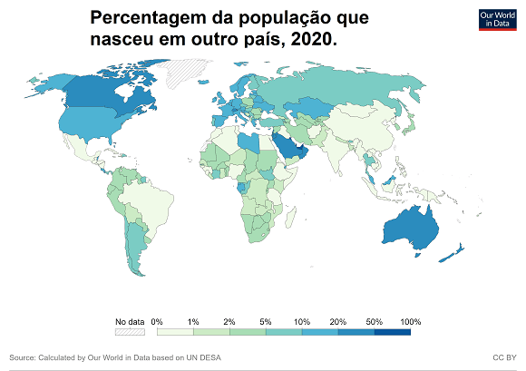
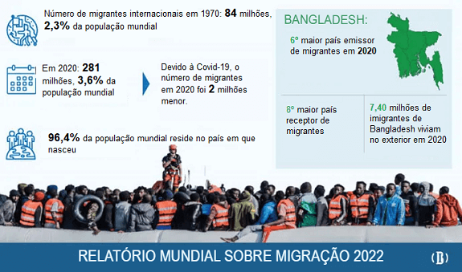
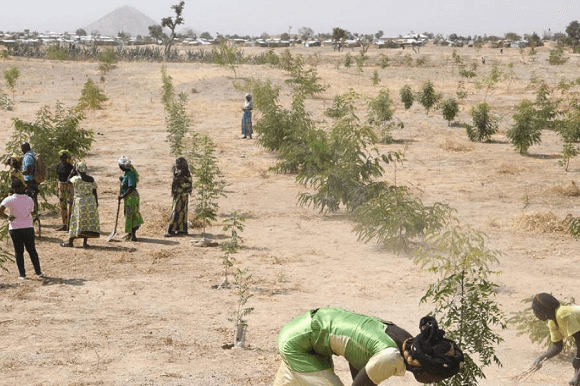
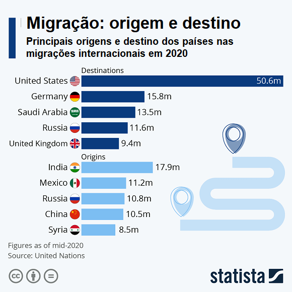
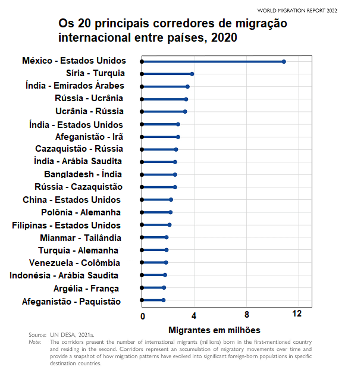
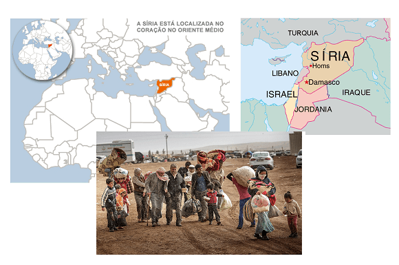
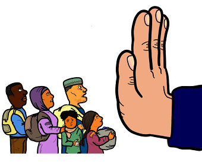
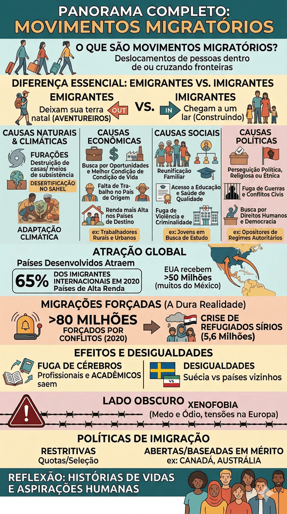

Texto 03 - Migrações internacionais
Conteúdo: Tipos de movimentos populacionais: voluntário, forçado e controlado; Imigrantes; Refugiados; Xenofobia.
Objetivo: Caracterizar e analisar os principais conceitos relativos aos fluxos de pessoas no mundo.
Conteúdo: Tipos de movimentos populacionais: voluntário, forçado e controlado; Imigrantes; Refugiados; Xenofobia.
Objetivo: Caracterizar e analisar os principais conceitos relativos aos fluxos de pessoas no mundo.
Digite seu nome
Na aula passada vimos como a população mundial evoluiu e quais foram as principais questões envolvendo sua distribuição pelo mundo.
Hoje, vamos embarcar em uma jornada pelo intrigante mundo das migrações. Vamos explorar porque as pessoas deixam suas terras natais e como isso afeta as regiões de origem e destino.
Ao final desta aula, vamos saber as causas e as características das migrações pelo mundo.
Para começar, o que exatamente são movimentos migratórios? Eles representam os deslocamentos de pessoas de um lugar para outro, seja dentro das fronteiras de um país ou cruzando fronteiras internacionais. Este fenômeno tem raízes profundas na história da humanidade e continua a moldar nosso mundo de maneiras fascinantes.

Fonte: https://ourworldindata.org/. Acesso em: 09 set. 2023.É fundamental entender dois termos essenciais no estudo das migrações: "emigrantes" e "imigrantes". Emigrantes são indivíduos que deixam sua terra natal em busca de novos horizontes, enquanto imigrantes são aqueles que chegam a uma nova região ou país em busca de oportunidades e uma vida melhor. Imagine os emigrantes como aventureiros corajosos e os imigrantes como pessoas que estão construindo um novo lar em terras desconhecidas.
Vamos ver alguns dados sobre migrantes pelo mundo.

Fonte: https://publications.iom.int/books/world-migration-report-2022. Acesso em: 09 set. 2023.Agora, o que leva as pessoas a fazerem essas jornadas? As causas são diversas e multifacetadas. As causas naturais envolvem eventos como desastres naturais, como terremotos ou furacões, que podem destruir casas e meios de subsistência, forçando as pessoas a se deslocarem.
Mudanças climáticas, como desertificação e elevação do nível do mar, também têm impulsionado a migração de comunidades inteiras. Por exemplo, na região do Sahel, na África, as mudanças climáticas têm causado a desertificação de terras agrícolas, tornando impossível a sobrevivência para muitas comunidades locais.

Refugiados em Minawao, no nordeste dos Camarões, plantam árvores em uma região que foi desmatada devido às mudanças climáticas e à atividade humana. Fonte: Nações Unidas. Disponível em: https://brasil.un.org/pt-br/125639. Acesso em 09 set. 2023.As migrações são incrivelmente diversas em suas manifestações. Algumas são temporárias, como uma viagem de férias, enquanto outras são permanentes, envolvendo a mudança definitiva de residência.
Além disso, migrações podem ser individuais ou em grupo, e podem ocorrer tanto dentro de um mesmo país quanto entre diferentes nações. Essa diversidade nos lembra que a experiência migratória é única para cada pessoa e comunidade.
Quando as migrações cruzam fronteiras de outros países, chamamos isso de migrações internacionais. É importante notar que nem todos os países atraem o mesmo número de imigrantes.
Os países desenvolvidos, geralmente abastecidos com recursos e oportunidades, tendem a atrair um grande número de imigrantes em busca de uma vida melhor.
De acordo com o Banco Mundial, os países de alta renda receberam 65% dos imigrantes internacionais em 2020, evidenciando a disparidade nas oportunidades globais. Por exemplo, os Estados Unidos têm sido um destino histórico para imigrantes de várias partes do mundo devido às oportunidades econômicas e culturais que oferecem.
Em 2020, por exemplos, os Estados Unidos receberam mais de 50 milhões de imigrantes internacionais, segundo dados do da Organização Internacional para as Migrações, destacando sua atratividade como destino para imigrantes em busca de oportunidades econômicas.

Muitos desses imigrantes eram proveniente do México. Mas há muito mais corredores de migração pelo mundo. Veja abaixo:

Encaremos a dura realidade: as causas das migrações frequentemente estão enraizadas em condições precárias em seus lugares de origem.
Conflitos armados, desastres climáticos e falta de oportunidades econômicas são impulsionadores significativos.
De acordo com as estatísticas da ONU, mais de 80 milhões de pessoas foram forçadas a se deslocar devido a conflitos em 2020, um número alarmante que nos faz refletir sobre o estado atual do mundo.

Fonte: Refugiados sírios. https://matheusdesouza.com/2015/09/26/refugiados-sirios-um-breve-resumo/A crise de refugiados sírios é um exemplo notável dessa realidade. Mais de 5,6 milhões de sírios se tornaram refugiados devido ao conflito em seu país, de acordo com o Alto Comissariado das Nações Unidas para os Refugiados (ACNUR).
As migrações internacionais frequentemente revelam desigualdades globais. Os países desenvolvidos atraem imigrantes em busca de melhores condições de vida, enquanto os países subdesenvolvidos continuam a sofrer com a emigração de seus cidadãos.
De acordo com o Banco Mundial, os países de alta renda receberam 65% dos imigrantes internacionais em 2020, evidenciando a disparidade nas oportunidades globais.
A Suécia, devido a sua política de imigração mais acolhedora, recebeu um grande número de refugiados sírios nos últimos anos, enquanto muitos sírios continuam a fugir para nações vizinhas com menos recursos disponíveis.
Migrações não são eventos isolados; eles têm impactos profundos nos países de origem e nos receptores.
Um desses impactos é a fuga de cérebros, onde profissionais altamente qualificados deixam seus países de origem em busca de melhores oportunidades no exterior.
Isso pode privar os países de saída de talento vital, o que levanta questões sobre desenvolvimento e progresso.
A Índia, por exemplo, é um país que envia muitos emigrantes qualificados, contribuindo para a fuga de cérebros em setores como tecnologia e medicina.
Veja um panorama das migrações por continente:

Em muitos países receptores, a xenofobia, o medo ou ódio em relação a estrangeiros, pode surgir. Isso pode levar a tensões sociais e políticas, prejudicando a integração de imigrantes e a coesão social.
Em algumas partes da Europa, houve um aumento nos crimes de ódio e na discriminação contra imigrantes devido a preocupações sobre emprego e segurança.
Vamos dar uma olhada nas políticas de imigração. Cada país tem suas próprias regras e regulamentos para controlar quem entra e quem sai.
Algumas nações têm políticas mais abertas, incentivando a imigração para impulsionar a economia e a diversidade cultural. Outras adotam abordagens mais restritivas, com quotas rigorosas e processos de seleção rigorosos.
O Canadá tem um sistema de imigração baseado em méritos que avalia candidatos com base em habilidades, educação e experiência, enquanto outros países, como a Austrália, têm políticas semelhantes.
À medida que concluímos nossa exploração dos movimentos migratórios, é crucial lembrar que essas são histórias de vidas e aspirações humanas. Migração é uma força motriz que molda nosso mundo.
Confrontando as complexidades, desigualdades e desafios, nossa esperança é que, como estudantes de geografia, vocês possam refletir sobre essas questões e considerar como podem contribuir para um mundo mais inclusivo e solidário.
Continuem explorando e aprendendo sobre esse fenômeno global que define a história da humanidade.

Fonte: Organizado e revisado pelo autor.Teste seu conhecimento
Teste seu conhecimento
Teste seu conhecimento
P: Por que algumas pessoas escolhem migrar para países com climas extremos, como lugares muito frios ou quentes?
R: Algumas pessoas migram para lugares com climas extremos devido a oportunidades de emprego específicas ou atrações naturais, como a busca por empregos na indústria do petróleo em regiões árticas ou a atração de praias tropicais para trabalhos na indústria do turismo. Suas motivações podem variar, mas frequentemente envolvem a busca por oportunidades econômicas ou experiências únicas.
P: Como as redes sociais e a tecnologia impactaram as migrações internacionais?
R: As redes sociais e a tecnologia desempenharam um papel significativo nas migrações internacionais, facilitando a comunicação e o compartilhamento de informações. Por exemplo, as pessoas agora podem se conectar facilmente com amigos e familiares em outros países, o que pode influenciar sua decisão de migrar. Além disso, a internet permite que os migrantes acessem informações sobre destinos, oportunidades de emprego e até mesmo as condições políticas e econômicas de outros países, auxiliando na tomada de decisão.
P: Qual é o impacto das migrações internacionais na cultura e na culinária dos países receptores?
R: As migrações internacionais têm um impacto profundo na cultura e na culinária dos países receptores. À medida que as pessoas de diferentes origens se estabelecem em novas regiões, elas trazem consigo suas tradições culinárias e culturais únicas. Isso pode resultar em uma diversificação da oferta de alimentos e em uma mistura de pratos e sabores. Além disso, a interação entre culturas pode enriquecer a vida cultural de um país receptor, contribuindo para festivais, celebrações e práticas tradicionais que refletem a diversidade das comunidades migrantes.

CANDELORI, Roberto. Enciclopédia do Estudante: geografia geral. São Paulo: Moderna, 2008.
VOGLER, Christopher. A jornada do escritor: estruturas míticas para escritores. Tradução de Ana Maria Machado. 2.ed. Rio de Janeiro: Nova Fronteira, 2006.
SKOLNICK, Evan. Video game storytelling: what every developer needs to know about narrative techniques.New Yoirk: Watson-Guptill, 2014.